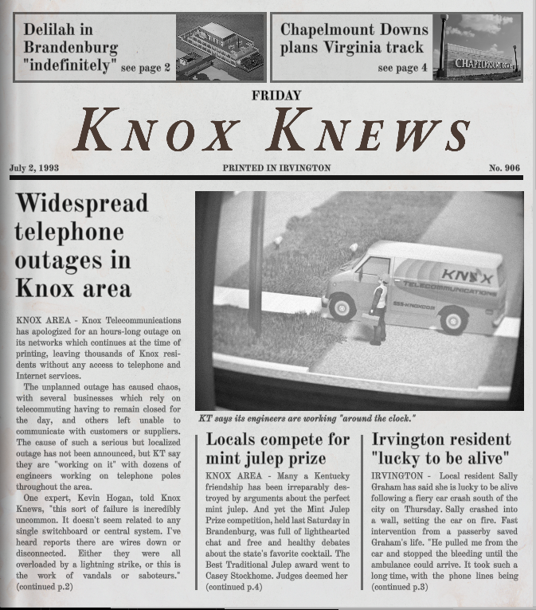
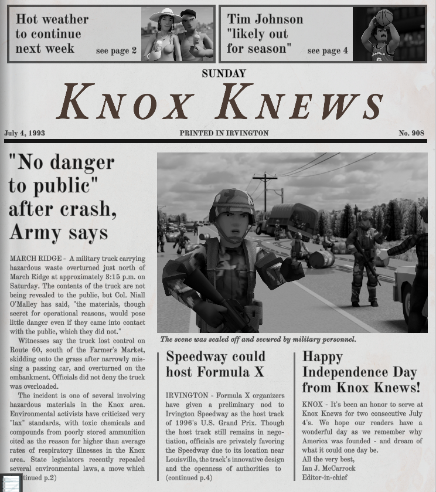
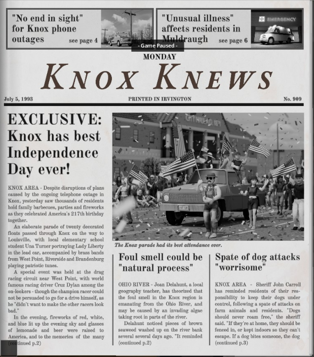
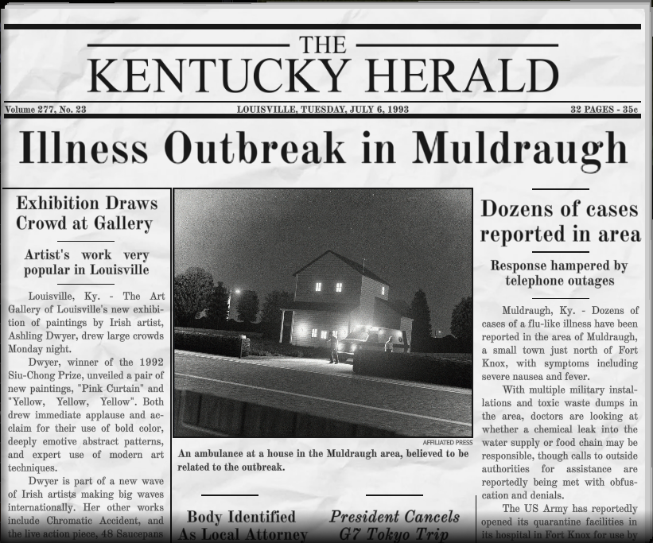
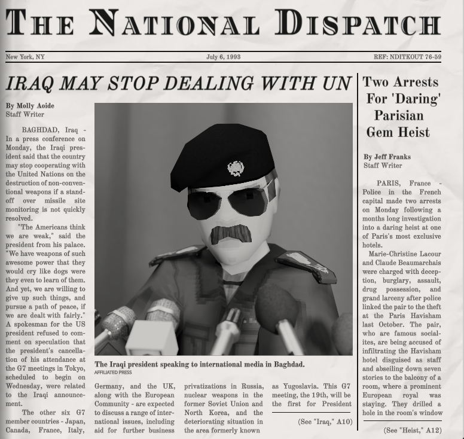
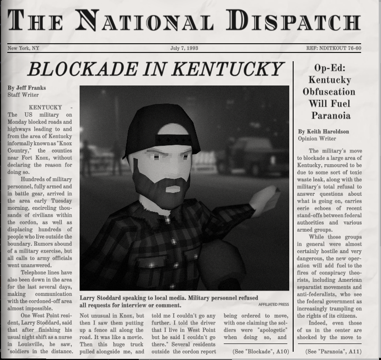
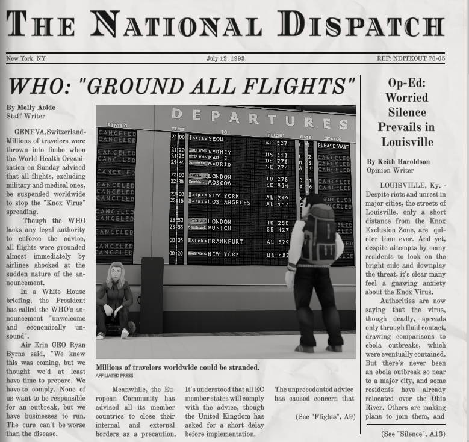
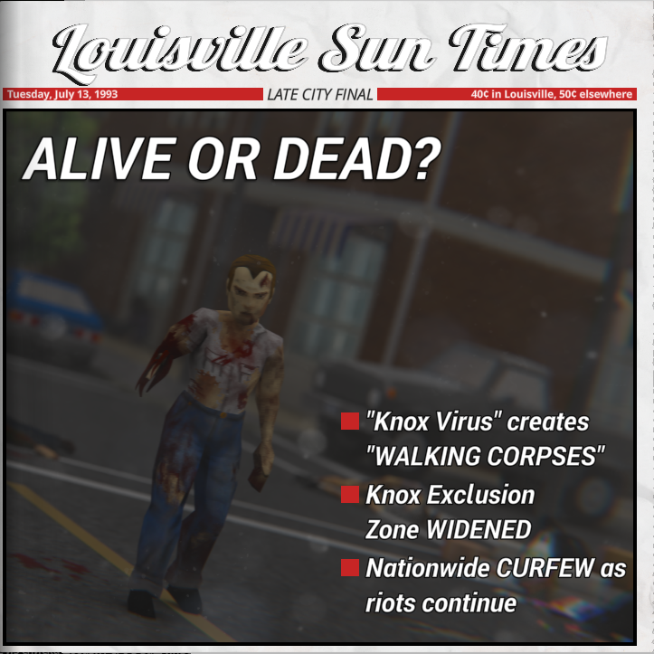
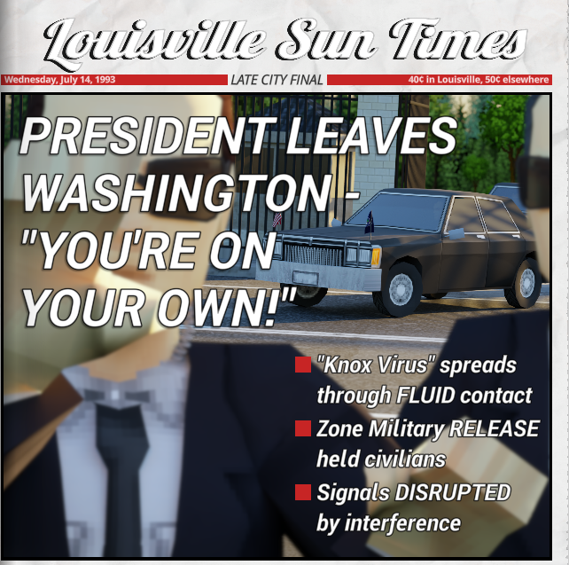

El Brote del Condado de Knox
Una inmersión profunda en el colapso de la civilización en el verano de 1993.
Cronología de la Infección (9 - 18 de Julio, 1993)
El Virus Aerotransportado vs. Mordeduras
Uno de los aspectos más aterradores del lore de Project Zomboid es la naturaleza del contagio. Aunque las mordeduras de los infectados causan una fiebre mortal y una reanimación segura, el verdadero catalizador del fin del mundo fue una cepa mutada que se propagó por el aire.
Millones de personas alrededor del planeta que nunca fueron mordidas cayeron repentinamente enfermas y murieron, convirtiéndose en cadáveres reanimados antes de que nadie pudiera comprender el fenómeno.

La Cuarentena del Ejército
Ante los primeros indicios del brote en el condado de Knox (Kentucky), el ejército estadounidense actuó con extrema rapidez y brutalidad. Se erigieron enormes barricadas, se cortaron carreteras principales y se desplegaron tropas en ciudades como West Point, Muldraugh y Valley Station.
Los civiles atrapados dentro de la zona de exclusión fueron abandonados a su suerte bajo la justificación de contener una pandemia global, convirtiendo la región en una ratonera mortal.

Transcripciones y Frecuencias
Registros de transmisiones de radio recuperados durante el Evento Knox.
Frecuencia M1A1
Mensaje repetitivo de estación de números / Coordenadas de Fort Knox[cite: 2].
Voz automatizada:
Tres. Siete. Ocho. Nueve. Dos. Cero. Nueve. Ocho. Cinco. Nueve. Siete. Cuatro. Siete. Cero. Nueve[cite: 2].
Frecuencia Desconocida
12 de julio de 1993, 06:00 - 12:00[cite: 3].
Ponente:
¿Hola? ¿HOLA? Estoy en la zona de exclusión. Te están mintiendo. El Ejército sabe exactamente lo que es esto. ¡Las personas ya no son personas![cite: 3]
Knox Hitz Radio
Música y avisos de Janina, Frankie y Billy[cite: 4, 6, 8].
Productor / Anfitrión:
¡Knox Hitz! ¡Tu estilo, tu música! Intentaremos mantenerlo normal a pesar de los bloqueos militares[cite: 4, 6].
KnoxTalk Radio
Llamadas públicas y teorías conspirativas[cite: 31, 32].
Anfitrión y Llamadas:
Debate sobre cortes telefónicos, laboratorios secretos del ejército y el desarrollo del brote[cite: 33, 36, 46].
NNR Network
Noticias nacionales y comunicados presidenciales[cite: 62, 64].
Anfitrión NNR:
Reportes oficiales de que "el Evento Knox está contenido"[cite: 64, 72] hasta el colapso global el 18 de julio[cite: 90].
Noticiero LBMW y Jonas
Jackie Jaye y Jonas Underwood[cite: 93, 117].
Jackie Jaye:
Crónica de la caída del perímetro, propagación aérea y el colapso total de la civilización[cite: 93, 115, 120].
Prensa Escrita (Knox Knews & The Herald)
Haz clic en el botón de cada periódico para alternar entre el texto original en inglés y su traducción al español en tiempo real.

Apagones Telefónicos Masivos
Widespread telephone outages in Knox area: Knox Telecommunications has apologized for an hours-long outage on its networks, leaving residents without access to telephone and internet services[cite: 130].

"Sin peligro público", dice el Ejército
"No danger to public" after crash, Army says: A military truck carrying hazardous waste overturned just north of March Ridge at 3:15 p.m. on Saturday. Col. Niall O'Malley stated it poses little danger[cite: 131].

El mejor 4 de Julio de la historia
Knox has best Independence Day ever!: Despite telephone outages, thousands of residents celebrated America's 217th birthday with family barbecues, parades and fireworks[cite: 132].

Brote de Enfermedad en Muldraugh
Illness Outbreak in Muldraugh: Dozens of cases of a flu-like illness have been reported in the area of Muldraugh, with symptoms including severe nausea and fever[cite: 133].

Irak podría romper tratos con la ONU
Iraq may stop dealing with UN: In a press conference, the Iraqi president stated the country may stop cooperating with the United Nations over missile site monitoring disputes[cite: 134].

Bloqueo en Kentucky
Blockade in Kentucky: The US military on Monday blocked roads leading to and from "Knox Country" without declaring a reason, deploying hundreds of armed troops[cite: 135].

OMS: "Suspender todos los vuelos"
WHO: "Ground all flights": Millions of travelers were thrown into limbo when the WHO advised grounding all international flights worldwide to stop the "Knox Virus" spreading[cite: 136].

¿Vivo o Muerto?
Alive or Dead?: "Knox Virus" creates "walking corpses". Knox Exclusion Zone widened. Nationwide curfew implemented as riots continue[cite: 137].

¡El Presidente abandona Washington!
President leaves Washington - "You're on your own!": Knox virus spreads through fluid contact. Zone military release held civilians. Signals disrupted by interference[cite: 138].
La ONU denuncia la respuesta de Knox
UN denounces Knox response: Thirty-eight nations issued a joint statement denouncing a "complete lack of clarity" over the details of the Knox illness outbreak[cite: 139].